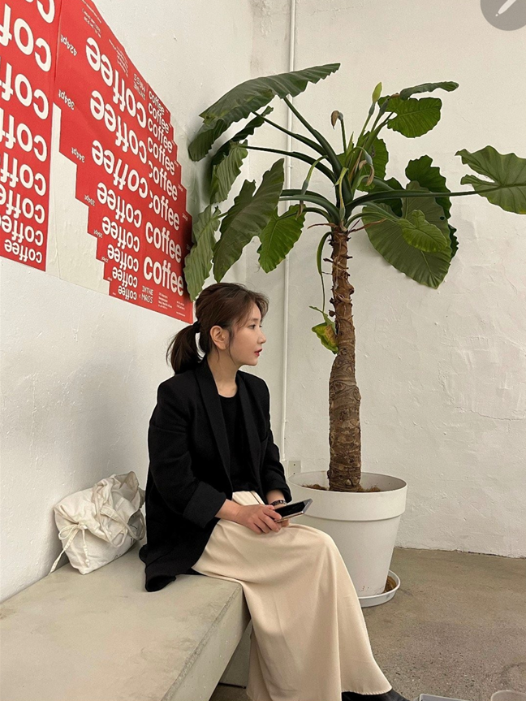

프로야구 관람
응원하는 팀은 LG 트윈스. 경기장의 분위기와 함께 응원하는 순간을 좋아해요.
GO TWINS !
야구장의 열기와 커피의 향, 그리고 고양이의 느긋한 시간을 좋아해요. 좋아하는 것들을 하나씩 모아가는 김현아의 페이지입니다.

요즘 제 마음을 가장 오래 머물게 하는 세 가지. 저를 이루는 작은 조각들이에요.
응원하는 팀은 LG 트윈스. 경기장의 분위기와 함께 응원하는 순간을 좋아해요.
좋아하는 커피를 나만의 방식으로 소개하는 일을 마음에 품고 있어요.
고양이를 무척 좋아해요. 고양이의 다정하고도 자유로운 매력에 빠져 있어요.
야구와 커피, 고양이. 지금 좋아하는 것들을 더 알아가며, 언젠가 제 취향이 담긴 커피 공간을 만들어가는 상상을 하고 있어요. 이 페이지도 그 과정과 함께 천천히 채워갈게요.